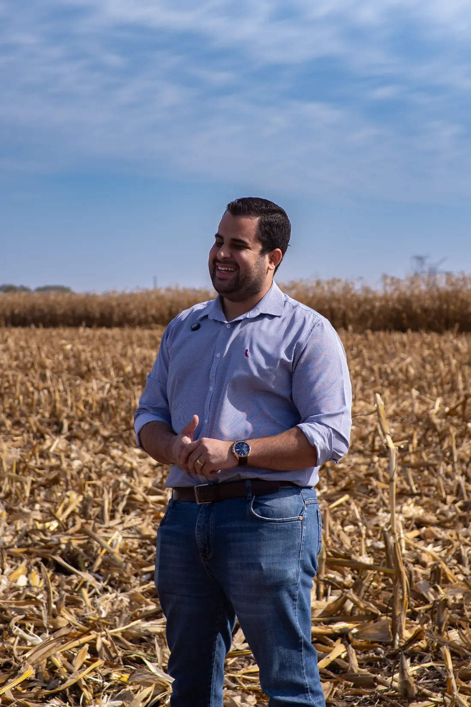
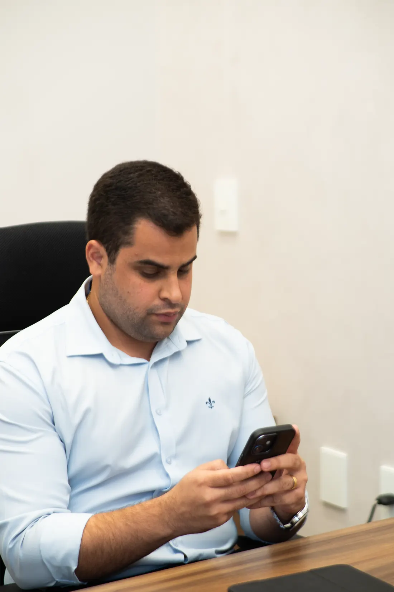

Uma história que começa em 2016, longe de qualquer tribunal
Em 2016, a família de Lucas quebrou financeiramente. Quem já viu o patrimônio da própria família em risco não precisa que ninguém explique o que isso faz com as pessoas: a conversa que muda de tom na mesa do almoço, a conta que não fecha, a sensação de que o que levou uma vida pra construir pode se desfazer em meses.
A advocacia veio depois disso, e por causa disso. Desde a faculdade, Lucas carregava a intenção de ter a própria porta. Em fevereiro de 2026, ela abriu: um escritório dedicado ao produtor rural, com foco no problema que ele conhece por dentro, a dívida que ameaça a terra de uma família.
A motivação declarada não é dinheiro. É saber exatamente o que o cliente está sentindo quando procura ajuda, porque ele já sentiu. E é ter transformado essa memória em preparo técnico pra resolver, não em discurso.
De uma família quebrada até a porta própria
-
2016
A família quebra
O que duas gerações levaram a vida pra construir se desfaz.
-
2020
Dentro do processo
Formado em Direito, entra para um escritório e passa a atuar em renegociação de dívida rural pela via judicial: defesa em execução, revisão de cédula e contrato. O que se briga no processo.
-
2022
Inscrição na Ordem
Passa a advogar com inscrição própria na seccional de Goiás.
-
2024
Antes do processo
Assume a renegociação de dívida extrajudicial numa consultoria do agro: sentar com o banco e resolver na mesa, enquanto ainda dá pra resolver na mesa.
-
2026
Porta própria
Abre o Lucas Cabral Advogados com os dois lados na mão: o acordo que evita o processo e a defesa para quando ele já existe.

Lucas Cabral, advogado do produtor rural
À frente do escritório que leva o seu nome, atende produtores rurais e suas famílias em renegociação de dívida rural, contratos agrários e gestão financeira da porteira pra dentro. O escritório fica em Jataí, no sudoeste goiano, e o atendimento alcança o Brasil inteiro.
Se puder ser lembrado por uma única coisa, que seja esta: um bom profissional, tecnicamente. Relacionamento abre porta, mas é a técnica que resolve o caso. Por isso o estudo vem antes do conselho: mercado, Plano Safra, decisões do STJ, regras do Banco Central, tudo passa pelo filtro do que muda de verdade na vida de quem planta.
O estudo por trás
- Pós-graduação em Direito Ambiental Aplicado ao Agronegócio
- Administrador Judicial
- Prática em Direito Ambiental
- Negociação empresarial e administração de conflitos
Renegociação de dívida rural não é teoria aqui.
Números aproximados de experiência acumulada, incluindo a atuação anterior à abertura do escritório. Cada caso depende dos fatos e dos documentos, e não existe garantia de resultado.
O que já passou pela mesaaté 2026
- Dívida ruralR$ 200 mi
- Famílias produtoras70
- Casos com a garantia no centro30
O estudo vem antes do conselho.
Nada sai daqui por opinião solta. Cada orientação nasce de pesquisa e de ver a lavoura de perto.
Radar
Pesquisa contínua: mercado, Plano Safra, economia, leis, decisões do STJ e do STF, Banco Central, Conab.
Campo
Visitas a fazendas e famílias pra aprender com a realidade de cada produtor, nunca pra ensinar de cima.
Oficina
O que foi aprendido vira orientação prática: artigos, vídeos, conversas.
Distribuição
Chegar até o produtor onde ele já está, antes de ele precisar de advogado.

Fale sobre a sua situação. Sem compromisso, com clareza.
Uma primeira conversa curta e sem custo. Depois, a prosa de verdade, com os papéis na mesa: na fazenda, no escritório em Jataí ou por vídeo.